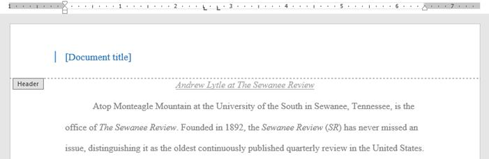
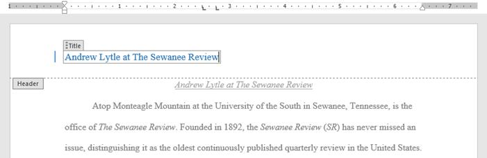

Tata letak halaman (Page Layout)
Word menawarkan berbagai opsi tata letak dan pemformatan halaman yang memengaruhi tampilan konten di halaman. Anda dapat menyesuaikan orientasi halaman, ukuran kertas, dan margin halaman tergantung pada tampilan dokumen yang Anda inginkan.
unduh file latihanWord menawarkan dua pilihan orientasi halaman: landscape dan portrait. Bandingkan contoh kita di bawah ini untuk melihat bagaimana orientasi dapat mempengaruhi penampilan dan jarak teks dan gambar.
-
Lansekap berarti halaman berorientasi horizontal.

-
Potret berarti halaman diorientasikan secara vertikal.

Untuk mengubah orientasi halaman:
- Pilih tab Tata Letak.
-
Klik perintah Orientation di grup Page Setup.

-
Menu tarik-turun akan muncul. Klik Portrait atau Landscape untuk mengubah orientasi halaman.

- Orientasi halaman dokumen akan diubah.
Secara default, ukuran halaman dokumen baru adalah 8,5 inci kali 11 inci. Bergantung pada proyek Anda, Anda mungkin perlu menyesuaikan ukuran halaman dokumen Anda. Penting untuk dicatat bahwa sebelum mengubah ukuran halaman default, Anda harus memeriksa untuk melihat ukuran halaman mana yang dapat diakomodasi oleh printer Anda.
Untuk mengubah ukuran halaman:
Word memiliki berbagai ukuran halaman yang telah ditentukan untuk dipilih.
-
Pilih tab Layout, lalu klik perintah Size.

-
Menu tarik-turun akan muncul. Ukuran halaman saat ini disorot. Klik ukuran halaman standar yang diinginkan.
- Ukuran halaman dokumen akan diubah.
Untuk menggunakan ukuran halaman khusus:
Word juga memungkinkan Anda untuk menyesuaikan ukuran halaman di kotak dialog Penyetelan Halaman.
-
Dari tab Tata Letak, klik Ukuran. Pilih Lebih Banyak Ukuran halaman dari menu tarik-turun.
- Kotak dialog Pengaturan Halaman akan muncul.
-
Sesuaikan nilai Width dan Height, lalu klik OK.
- Ukuran halaman dokumen akan diubah.
Margin adalah ruang antara teks dan tepi dokumen Anda. Secara default, margin dokumen baru ditetapkan sebagai Normal, yang berarti memiliki ruang satu inci antara teks dan tepian. Tergantung pada kebutuhan Anda, Word memungkinkan Anda untuk mengubah ukuran margin dokumen Anda.
Untuk memformat margin halaman:
Word memiliki berbagai ukuran marjin yang telah ditetapkan untuk dipilih.
-
Pilih tab Layout, kemudian klik perintah Margin.

-
Sebuah menu drop-down akan muncul. Klik ukuran margin yang telah ditetapkan yang Anda inginkan.

- Margin dokumen akan diubah.
Untuk menggunakan margin khusus:
Word juga memungkinkan Anda untuk menyesuaikan ukuran margin Anda di kotak dialog Penyetelan Halaman.
-
Dari tab Tata Letak, klik Margin. Pilih Margin Kustom dari menu tarik-turun.

- Kotak dialog Pengaturan Halaman akan muncul.
-
Sesuaikan nilai untuk setiap margin, lalu klik OK.

- Margin dokumen akan diubah.
Anda juga dapat membuka kotak dialog Page Setup dengan menavigasi ke tab Layout dan klik panah kecil di sudut kanan bawah grup Page Setup.

 Video
VideoTonton video di bawah untuk mempelajari lebih lanjut tentang page layout di Word.
Latihan!
- Buka dokumen latihan kami.
- Ubah orientasi halaman menjadi Potret.
- Ubah ukuran halaman menjadi Legal. Jika ukuran Legal tidak tersedia, Anda dapat memilih ukuran lain seperti A5.
- Ubah margin ke pengaturan Sempit.
-
Setelah selesai, dokumen Anda harus menjadi satu halaman jika menggunakan ukuran Legal. Seharusnya terlihat seperti ini:

Setelah membuat dokumen, Anda mungkin ingin mencetaknya untuk melihat dan membagi pekerjaan Anda secara offline. Sangat mudah untuk melihat dan mencetak dokumen di Word menggunakan panel Print.
Untuk mengakses panel Print :
-
Pilih tab File. Tampilan Backstage akan muncul.
-
Pilih Print. Panel Print akan muncul.

Pelajari lebih lanjut tentang menggunakan panel Print.
- Print: Klik tombol ini untuk mencetak dokumen.
- Copies: Di sini, Anda dapat memilih berapa banyak salinan yang akan dicetak.
- Printer: Jika Anda memiliki beberapa printer, pilih salah satu yang ingin Anda gunakan.
- Settings: Di sini, Anda dapat memilih untuk mencetak seluruh dokumen, hanya halaman ini, atau cetak kustom untuk mencetak halaman tertentu.
- Single and Double-Sided Printing: Pilih apakah akan mencetak pada satu atau kedua sisi kertas, jika printer Anda mendukung pengaturan ini.
- Collated: Jika Anda mencetak beberapa salinan, Anda dapat memilih bagaimana halaman akan diurutkan. Collated akan menyortir mereka 1, 2, 3, 1, 2, 3. Uncollated akan menyortir mereka 1, 1, 2, 2, 3, 3.
- Page Orientation: Di sini, Anda dapat memilih orientasi portrait (vertikal) atau landscape (horizontal).
- Paper Size: Anda dapat memilih ukuran kertas yang ingin Anda gunakan, jika printer Anda mendukung pengaturan ini.
- Margin: Di sini, Anda dapat mengatur margin halaman.
- Scaling: Opsi ini memungkinkan Anda untuk mencetak lebih dari satu halaman pada satu lembar atau ukuran dokumen agar sesuai dengan ukuran kertas tertentu.
- Page Selection: Anda dapat mengklik panah, untuk melihat halaman yang berbeda di panel Preview.
- Zoom Control / Zoom to Page: Klik dan tarik slider untuk menggunakan kontrol pembesaran. Jumlah sebelah kiri slider bar mencerminkan persentase zoom. Anda dapat mengklik Zoom ke tombol Zoom to Page untuk mengatur kontrol zoom agar muat satu halaman di jendela.
- Preview Pane: Di sini, Anda dapat melihat pratinjau tentang bagaimana lembar kerja Anda akan terlihat ketika dicetak.
Untuk mencetak dokumen:
-
Arahkan ke panel Print, lalu pilih printer yang diinginkan.

-
Masukkan jumlah salinan yang ingin Anda cetak.
-
Pilih pengaturan tambahan jika diperlukan.

-
Klik Print.
Kadang-kadang Anda mungkin merasa tidak perlu mencetak seluruh dokumen, di mana pencetakan kasus kustom mungkin lebih cocok untuk kebutuhan Anda. Apakah Anda mencetak beberapa halaman individu atau berbagai halaman, Word memungkinkan Anda untuk menentukan persis halaman yang ingin Anda cetak.
Untuk mencetak dokumen secara kustom:
Jika Anda ingin mencetak halaman atau rentang halaman individual, Anda harus memisahkan setiap entri dengan koma (misalnya 1, 3, 5-7, atau 10-14).
- Arahkan ke panel Print.
-
Di bidang Halaman :, masukkan halaman yang ingin Anda cetak.
-
Klik Print.

VideoTonton video di bawah ini untuk mempelajari lebih lanjut tentang mencetak dokumen di Word.
Latihan!
- Buka dokumen latihan kami.
- Di panel Print, ubah pengaturan untuk hanya mencetak halaman 2 dan 5.
- Ubah jumlah salinan menjadi 2.
- Gunakan panah di bagian bawah pratinjau cetak untuk melihat setiap halaman.
-
Setelah selesai, panel Print Anda akan terlihat seperti ini:

- Opsional: Jika Anda memiliki printer, Anda dapat mengklik perintah Print. Itu harus mencetak dua salinan halaman 2 dan 5.
Saat Anda sedang mengerjakan dokumen multi-halaman, mungkin ada saatnya Anda ingin memiliki kontrol lebih besar atas bagaimana tepatnya teks mengalir. Breaks dapat membantu dalam kasus ini. Ada banyak jenis jeda untuk dipilih tergantung pada apa yang Anda butuhkan, termasuk jeda halaman, jeda bagian, dan jeda kolom.
Untuk Menyisipkan page break:
Dalam contoh kami, tajuk bagian di halaman tiga ( Pendapatan Bulanan dan Menurut Klien ) dipisahkan dari tabel di halaman di bawah ini. Dan sementara kita bisa menekan Enter sampai teks itu mencapai bagian atas halaman empat, itu bisa dengan mudah digeser jika kita menambahkan atau menghapus sesuatu di bagian lain dari dokumen. Sebagai gantinya, kita akan menyisipkan page break.
-
Tempatkan titik penyisipan di mana Anda ingin membuat hentian halaman. Dalam contoh kita, kita akan menempatkannya di awal heading kita.

-
Pada tab Sisipkan, klik perintah Hentian Halaman. Anda juga dapat menekan Ctrl+Enter pada keyboard Anda.

-
Hentian halaman akan disisipkan ke dalam dokumen, dan teks akan berpindah ke halaman berikutnya.
Secara default, Breaks tidak terlihat. Jika Anda ingin melihat Breaks dalam dokumen Anda, klik perintah Show / Hide pada tab Home.
Section Breaks menciptakan sebuah penghalang antara bagian yang berbeda dari dokumen, yang memungkinkan Anda untuk memformat setiap bagian secara independen. Misalnya, Anda mungkin ingin satu bagian memiliki dua kolom, namun tidak untuk seluruh dokumen. Word menawarkan beberapa jenis section breaks.
- Next Page: Opsi ini memasukkan section Breaks dan memindahkan teks setelah Breaks ke halaman berikutnya dari dokumen.
- Continous: Opsi ini memasukkan section Breaks dan memungkinkan Anda untuk bekerja pada halaman yang sama.
-
Even Page and Odd Page: Opsi ini menambahkan bagian Breaks dan memindahkan teks setelah Breaks ke halaman genap atau ganjil berikutnya. Pilihan ini mungkin berguna ketika Anda ingin memulai bagian baru pada halaman genap atau ganjil (misalnya, sebuah bab baru dari buku).

Untuk menyisipkan section breaks:
Dalam contoh kita, kita akan menambahkan section Breaks untuk memisahkan paragraf dari daftar dua kolom.
-
Tempatkan titik penyisipan di mana Anda ingin membuat breaks. Dalam contoh kita, kita akan menempatkannya pada awal paragraf yang kita ingin pisahkan dari format dua kolom.

-
Pada tab Page Layout, klik perintah Breaks, kemudian pilih Breaks bagian yang diinginkan dari menu drop-down. Dalam contoh kita, kita akan pilih Continous sehingga paragraf kita tetap pada halaman yang sama seperti kolom.

-
Sebuah bagian Breaks akan muncul dalam dokumen.

-
Teks sebelum dan setelah Breaks bagian sekarang dapat diformat secara terpisah. Dalam contoh kita, kita akan menerapkan format satu-kolom pada paragraf.
-
Pemformatan akan diterapkan ke bagian saat ini dalam dokumen. Dalam contoh kita, teks di atas Breaks bagian menggunakan format dua kolom, sedangkan ayat di bawah ini Breaks menggunakan format satu kolom.

Bila Anda ingin memformat tampilan kolom atau memodifikasi text wrapping di sekitar gambar, Word menawarkan tambahan pilihan Breaks yang dapat membantu:
- Column: Ketika membuat beberapa kolom, Anda dapat menerapkan kolom Breaks untuk menyeimbangkan penampilan kolom. Teks apapun yang mengikuti column Breaks akan dimulai pada kolom berikutnya.
-
Text wrapping: Ketika teks telah melingkupi seluruh gambar atau objek, Anda dapat menggunakan teks-wrapping Breaks untuk mengakhiri pembungkus dan mulai mengetik pada baris di bawah gambar.
Untuk menghapus breaks:
Secara default, Breaks tersembunyi. Jika Anda ingin menghapus breaks, pertama-tama Anda harus menampilkan Breaks dalam dokumen Anda.
-
Pada tab Home, klik perintah Show / Hide.

-
Lokasikan Breaks yang ingin Anda hapus, kemudian menempatkan titik penyisipan pada awal breaks.

-
Tekan tombol Delete. Breaks akan dihapus dari dokumen.
VideoTonton video di bawah untuk mempelajari lebih lanjut tentang menggunakan Breaks di Word.
Latihan!
- Buka dokumen latihan kami.
- Gulir ke bagian Revenue Projections dekat akhir dokumen.
- Hapus page break setelah Triwulan ke-2 Proyeksi oleh client .
- Tempatkan kursor di awal header Web App Proyeksi.
- Menyisipkan Halaman Berikutnya bagian istirahat.
- Pada Page Setup group pada tab Layout, klik Kolom menu tarik-turun dan pilih salah satu. Ini akan memformat halaman menjadi kembali satu kolom dan harus membolehkan header Web App Proyeksi dan tabel di bawahnya akan mencakup seluruh halaman. Anda akan belajar lebih banyak tentang kolom dalam pelajaran berikutnya.
-
Setelah selesai, dua halaman terakhir harus terlihat seperti ini:

Kadang-kadang informasi yang Anda masukkan ke dalam dokumen, akan lebih baik jika ditampilkan dalam kolom. Tidak hanya dapat kolom membantu meningkatkan keterbacaan, tetapi beberapa jenis dokumen, seperti artikel koran, buletin, dan brosur, sering ditulis dalam format kolom. Word juga memungkinkan Anda untuk menyesuaikan kolom dengan menambahkan column break.
Untuk menambahkan kolom ke dokumen:
-
Pilih teks yang ingin Anda format.
- Pilih tab Layout, kemudian klik perintah Column. Sebuah menu drop-down akan muncul.
-
Pilih jumlah kolom yang ingin Anda buat.
-
Teks akan terformat ke dalam kolom.

Pilihan kolom tidak terbatas pada menu drop-down yang muncul. Pilih More Column di bagian bawah menu untuk mengakses kotak dialog Column. Klik tanda panah di sebelah Number of columns: untuk mengatur jumlah kolom.
Jika Anda ingin mengatur jarak dan alignment kolom, klik dan tarik indent marker pada Ruler sampai kolom muncul seperti yang Anda inginkan.

Untuk menghapus kolom:
Untuk menghapus pemformatan pada kolom, menempatkan titik penyisipan di mana saja di kolom, kemudian klik perintah Columns pada tab Layout. Pilih satu dari menu drop-down yang muncul.

Setelah Anda membuat kolom, teks otomatis akan berpindah dari satu kolom ke yang berikutnya. Kadang-kadang, Anda mungkin ingin mengontrol di mana setiap kolom akan dimulai. Anda dapat melakukan ini dengan membuat column break.
Untuk menambahkan column break
Dalam contoh kami di bawah ini, kami akan menambahkan column break yang akan memindahkan teks ke awal kolom berikutnya.
-
Tempatkan titik penyisipan di awal teks yang ingin dipindah.

- Pilih tab Layout, kemudian klik perintah Breaks. Sebuah menu drop-down akan muncul.
-
Pilih Column dari menu.

-
Teks akan bergerak ke awal kolom. Dalam contoh kita, itu pindah ke awal kolom berikutnya.

Untuk menghapus column breaks:
-
Secara default, lokasi breaks tersembunyi. Jika Anda ingin menampilkan breaks dalam dokumen Anda, klik perintah Show / Hide pada tab Home.
-
Tempatkan titik penyisipan di sebelah kiri breaks yang ingin Anda hapus.

-
Tekan tombol delete untuk menghapus breaks.

VideoTonton video di bawah ini untuk mempelajari lebih lanjut tentang kolom di Word.
Latihan!
- Buka dokumen latihan kami.
- Gulir ke halaman 3.
- Pilih semua teks dalam daftar bullet di bawah Community Reminder dan format itu menjadi dua kolom.
- Tempatkan kursor Anda di awal bullet keempat di depan kata Visitors.
- Sisipkan column break.
-
Setelah selesai, halaman Anda seharusnya terlihat seperti ini:

Header adalah bagian dari dokumen yang muncul di margin atas, sedangkan footer adalah bagian dari dokumen yang muncul di margin bawah. Header dan footer umumnya mengandung informasi tambahan seperti nomor halaman, tanggal, nama pengarang, dan catatan kaki, yang dapat membantu membuat dokumen lebih terorganisir dan mempermudah dibaca. Teks yang dimasukkan pada header atau footer akan muncul pada setiap halaman dokumen.
Untuk membuat header atau footer:
Dalam contoh kita, kita ingin menampilkan nama penulis di bagian atas setiap halaman, jadi kami akan menempatkannya di header.
-
klik ganda di mana saja pada margin atas atau bawah dokumen Anda. Dalam contoh kita, kita akan double-klik margin atas.
-
Header atau footer akan terbuka, dan tab Desain akan muncul di sisi kanan Pita. Titik penyisipan akan muncul di header atau footer.

-
Ketik informasi yang diinginkan ke dalam header atau footer. Dalam contoh kita, kita akan ketik nama penulis dan tanggal.

-
Setelah selesai, klik Close Header and Footer. Anda juga dapat menekan tombol Esc.
-
Header atau footer teks akan muncul.
Untuk menyisipkan header atau footer preset:
Kata memiliki berbagai header dan footers yang dapat digunakan untuk meningkatkan desain dan tata letak dokumen Anda. Dalam contoh kita, kita akan menambahkan sebuah header preset ke dokumen kita.
-
Pilih tab Insert, kemudian klik perintah Header atau Footer. Dalam contoh kita, kita akan klik perintah header.
-
Pada menu yang muncul, pilih header atau footer yang disediakan.
-
Header atau footer akan muncul. Banyak headers dan footers berisi penampung teks yang disebut Content Control Field. Bidang ini baik untuk menambahkan informasi seperti judul dokumen, nama penulis, tanggal, dan nomor halaman.

-
Untuk mengedit Content Control Field, klik dan ketik informasi yang diinginkan.

-
Setelah selesai, klik Tutup Header dan Footer. Anda juga dapat menekan tombol Esc.
Setelah selesai, klik Close Header and Footer. Anda juga dapat menekan tombol Esc.
Setelah Anda menutup header atau footer, ini masih akan terlihat, tetapi akan terkunci. Cukup klik ganda header atau footer untuk membuka kunci, yang akan memungkinkan Anda untuk mengeditnya.
Opsi tab desain
Ketika header dan footer dokumen Anda akan dibuka, tab Desain akan muncul di sisi kanan Ribbon, ini menyediakan berbagai pilihan pengeditan:
-
Menyembunyikan header dan footer halaman pertama: Pada beberapa dokumen, Anda mungkin tidak ingin halaman pertama menampilkan header dan footer, seperti jika Anda memiliki halaman sampul dan ingin memulai penomoran halaman pada halaman kedua. Jika Anda ingin menyembunyikan header dan footer halaman pertama, centang kotak di samping Different First Page.
-
Menghapus header atau footer: Jika Anda ingin menghapus semua informasi yang terdapat di header, klik perintah Header dan pilih Remove Header dari menu yang muncul. Demikian pula, Anda dapat menghapus footer menggunakan perintah Footer.

-
Nomor Halaman: Anda dapat menomorkan setiap halaman secara otomatis dengan perintah Page Number.

-
Opsi tambahan: Dengan perintah yang tersedia dalam kelompok Insert, Anda dapat menambahkan tanggal dan waktu, info dokumen, gambar, dan lainnya header atau footer.
Memasukkan tanggal atau waktu menjadi header atau footer:
Kadang-kadang ini membantu untuk memasukkan tanggal atau waktu di header atau footer. Misalnya, Anda mungkin ingin dokumen menunjukkan tanggal ketika dibuat.
Di sisi lain, Anda mungkin ingin menampilkan tanggal ketika
dicetak, yang dapat Anda atur dengan menetapkan update secara otomatis. Hal ini berguna jika Anda sering memperbarui dan mencetak dokumen karena Anda ingin selalu memberitahu versi yang terbaru.
-
Klik ganda di mana saja di header atau footer untuk membukanya. Tempatkan titik penyisipan di mana Anda ingin tanggal atau waktu muncul. Dalam contoh kita, kita akan menempatkan titik penyisipan pada baris di bawah nama penulis.
-
Tab Desain akan muncul. Klik perintah Date & Time.

- Kotak dialog Date and Time akan muncul. Pilih tanggal yang diinginkan atau format waktu.
- Centang kotak di samping Update Automatically jika Anda ingin tanggal berubah setiap kali Anda membuka dokumen. Jika Anda tidak ingin tanggalnya berubah, tinggalkan pilihan ini tidak tercentang.
-
Klik Oke.
-
Tanggal akan muncul di header.

VideoTonton video di bawah ini untuk mempelajari lebih lanjut tentang header dan footer di Word.
Latihan!
- Buka dokumen latihan kami. Jika Anda sudah download dokumen praktik kami dalam rangka untuk mengikuti pelajaran, pastikan untuk mengunduh salinan dengan mengklik link dalam langkah ini.
- Buka header.
- Pilih Align Right pada tab Home dan ketik nama Anda.
- Di bawah nama Anda, gunakan perintah Date & Time pada tab Desain dan masukkan tanggal. Anda dapat menggunakan format mana yang Anda suka.
- Pada bagian footer, masukkan footer Grid yang telah ditetapkan.
- Tutup header dan footer.
-
Setelah selesai, halaman Anda harus terlihat seperti ini:

Nomor halaman dapat digunakan secara otomatis nomor setiap halaman dalam dokumen Anda. Mereka datang dalam berbagai format penomoran dan dapat disesuaikan dengan kebutuhan Anda. Nomor halaman biasanya ditempatkan di header, footer, atau marjin samping. Bila Anda memerlukan nomor halaman pada beberapa halaman yang berbeda, Word memungkinkan Anda untuk me-restart penomoran halaman.
Word dapat secara otomatis melabeli setiap halaman dengan nomor halaman dan menempatkannya di header, footer, atau margin samping. Jika Anda memiliki header atau footer yang ada, itu akan dihapus dan diganti dengan nomor halaman.
Untuk menambahkan nomor halaman:
-
Pada tab Insert, klik perintah Page Number.
-
Buka Top of Page, Bottom of Page, atau menu Page Margin, tergantung di mana nomor halaman ingin diletakkan. Kemudian pilih gaya header yang diinginkan.

-
Penomoran halaman akan muncul.
-
Tekan tombol Esc untuk mengunci header dan footer.

- Jika Anda ingin membuat perubahan pada nomor halaman Anda, cukup klik dua kali header atau footer untuk membukanya.
Menambahkan nomor halaman ke header atau footer yang ada:
Jika Anda sudah memiliki header atau footer dan Anda ingin menambahkan nomor halaman disitu, Word memiliki opsi yang secara otomatis akan memasukkan nomor halaman ke dalam header atau footer yang ada. Dalam contoh kita, kita akan menambahkan penomoran halaman untuk header dokumen kita.
-
Klik ganda di mana saja pada header atau footer untuk membukanya.
-
Pada tab Design, klik perintah Page Number. Pada menu yang muncul, arahkan mouse ke Current Position dan pilih gaya penomoran halaman yang diinginkan.

-
Penomoran halaman akan muncul.
-
Setelah selesai, tekan tombol Esc.

Menyembunyikan nomor halaman pada halaman pertama:
Dalam beberapa dokumen, Anda mungkin tidak ingin nomor halaman muncul pada halaman pertama. Anda dapat menyembunyikan nomor halaman pertama tanpa mempengaruhi sisa halaman lainnya.
- Klik dua kali header atau footer untuk membukanya.
-
Dari tab Design, centang tanda di sebelah Different First Page. Header dan footer akan hilang dari halaman pertama. Jika Anda ingin, Anda dapat mengetik hal lain di header atau footer, dan itu hanya akan mempengaruhi halaman pertama saja.

Me-restart penomoran halaman
Word memungkinkan Anda untuk me-restart penomoran halaman pada setiap halaman dokumen Anda. Anda dapat melakukan ini dengan memasukkan section break dan memilih nomor yang ingin Anda restart penomorannya. Dalam contoh kita, kita akan restart penomoran halaman pada Works Cited dokumen kita.
-
Tempatkan titik penyisipan di bagian atas halaman yang ingin di-restart penomoran halamannya. Jika ada teks pada halaman, tempatkan titik penyisipan pada awal teks.

-
Pilih tab Layout, kemudian klik perintah Breaks. Pilih Next Page dari menu drop-down yang muncul.

- Section break akan ditambahkan ke dokumen.
-
Klik dua kali header atau footer yang berisi nomor halaman yang ingin di-restart.
-
Klik perintah Page Number. Pada menu yang muncul, pilih Format Page Number.
-
Sebuah kotak dialog akan muncul. Klik tombol Start. Secara default, akan mulai dengan 1. Jika Anda ingin, Anda dapat mengubah nomornya. Setelah selesai, klik Close.
-
Penomoran halaman akan dimulai ulang.
VideoTonton video di bawah ini untuk mempelajari lebih lanjut tentang nomor halaman di Word.
Latihan!
- Buka dokumen latihan kami.
- Pada halaman 1, masukkan Accent Bar nomor 4 halaman di Buttom of page.
- Dalam Design Options, pilih Dfferent First Page. Nomor halaman sekarang disembunyikan dari halaman pertama.
- Gulir dokumen ke halaman 27.
- Tempatkan kursor di awal judul Works Cited dan sisipkan break Continous Section.
- Pada footer di halaman 27, restart penomoran halaman dari 1.
-
Setelah selesai, bagian bawah halaman 27 akan terlihat seperti ini: